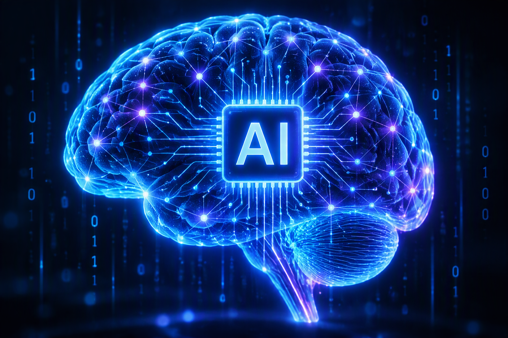

MIS & AI EthicsWebsite OverviewZoey PierceOctober 22, 2026Correct AI UsageThe correct usage of AI is as a supplement to one's learning. Artificial intelligence has many uses, but the death of critical thinking is not one of them. It is imperative to use AI to create study guides, practice problems, and other study tools. Another correct use of AI is to have it act as a tutor and take one through a comprehension process of concepts they have yet to grasp. AI Evaluation: Your paragraph makes a strong argument that AI should support learning rather than replace it. One critique, however, is that it presents AI primarily as a study aid while overlooking some of the risks associated with overreliance on AI tools. A more nuanced perspective would be that AI is most effective when used as a partner in the learning process. While generating study guides, practice questions, and explanations can enhance understanding, students must still evaluate the accuracy of AI-generated information and engage in independent analysis. If learners simply accept AI responses without questioning or verifying them, they may weaken their critical thinking and problem-solving skills. Therefore, the value of AI lies not only in providing answers but also in encouraging users to ask better questions and think more deeply about complex topics. Benefits of AI
Who Benefits?
How AI tools used
When learning about the proper ways to use Ai, one must have a good grasp on the Ethics of its use. Understanding ethics allows people to use AI correctly. Incorrect AI Usage
AI can be a valuable tool in education, if used properly and in a managed way. Students should avoid using AI as a substitute for learning because it can reduce critical thinking skills and lead to the death of knowledge. One risk of incorrect AI usage is becoming overly dependent AI for academic function and purposes.It is vital to use AI as a learning aid rather than just a replacement for independent work. |